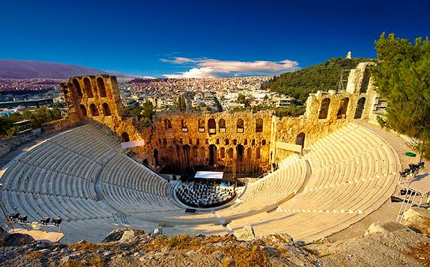

History of Athens
Athens (/ˈæθᵻnz/; Modern Greek: Αθήνα, Athína Greek pronunciation: [aˈθina], Ancient Greek: Ἀθῆναι, Athênai) is the capital and largest city of Greece. Athens dominates the Attica region and is one of the world's oldest cities, with its recorded history spanning over 3,400 years, and its earliest human presence starting somewhere between the 11th and 7th millennia BC. Classical Athens was a powerful city-state that emerged in conjunction with the seagoing development of the port of Piraeus, which had been a distinct city prior to its 5th century BC incorporation with Athens. A centre for the arts, learning and philosophy, home of Plato's Academy and Aristotle's Lyceum, it is widely referred to as the cradle of Western civilization and the birthplace of democracy, largely because of its cultural and political impact on the European continent, and in particular the Romans.[8] In modern times, Athens is a large cosmopolitan metropolis and central to economic, financial, industrial, maritime, political and cultural life in Greece. In 2015, Athens was ranked the world's 29th richest city by purchasing power and the 67th most expensive in a UBS study.
Athens is recognised as a global city because of its location and its importance in shipping, finance, commerce, media, entertainment, arts, international trade, culture, education and tourism. It is one of the biggest economic centres in southeastern Europe, with a large financial sector, and its port Piraeus is both the largest passenger port in Europe and the second largest in the world. The municipality (city) of Athens had a population of 664,046 (in 2011) within its administrative limits, and a land area of 38.96 km2 (15.04 sq mi). The urban area of Athens (Greater Athens and Greater Piraeus) extends beyond its administrative municipal city limits, with a population of 3,090,508 (in 2011) over an area of 412 km2 (159 sq mi). According to Eurostat in 2011, the Functional urban areas (FUA) of Athens was the 9th most populous FUA in the European Union (the 6th most populous capital city of the EU), with a population of 3,828,000, having lost almost 300.000 inhabitants, probably due to the serious economic crisis that affected Greece in recent years. Athens is also the southernmost capital on the European mainland.
The heritage of the classical era is still evident in the city, represented by ancient monuments and works of art, the most famous of all being the Parthenon, considered a key landmark of early Western civilization. The city also retains Roman and Byzantine monuments, as well as a smaller number of Ottoman monuments.
- Maiden Voyage
Athens is home to two UNESCO World Heritage Sites, the Acropolis of Athens and the medieval Daphni Monastery. Landmarks of the modern era, dating back to the establishment of Athens as the capital of the independent Greek state in 1834, include the Hellenic Parliament and the so-called "architectural trilogy of Athens", consisting of the National Library of Greece, the National and Kapodistrian University of Athens and the Academy of Athens. Athens was the host city of the first modern-day Olympic Games in 1896, and 108 years later it welcomed home the 2004 Summer Olympics. Athens is also home to several large museums, such as the National Archeological Museum, featuring the world's largest collection of ancient Greek antiquities, the Byzantine and Christian Museum and the new Acropolis Museum.